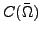

In this talk, PDE-constrained optimal control problems with state constraints are considered. A particular difficulty with state constraints is that the optimality system contains complementarity conditions between a function in a quite regular space, e.g., , and a generalized function in the dual space, having low regularity, e.g., the space of Borel measures. A general approach to tackle this situation is to introduce a suitable family of regularized problems and to follow the path of regularized solutions towards the solution of the state-constrained problem. In this talk, we investigate a class of regularization methods for state constrained optimal control problems that is related to penalty barrier multiplier methods as well as to the Moreau-Yosida regularization. We investigate the convergence properties of this class of methods and develop error estimates. The presented results are also applicable to related settings such as obstacle problems. The talk is concluded by numerical results.